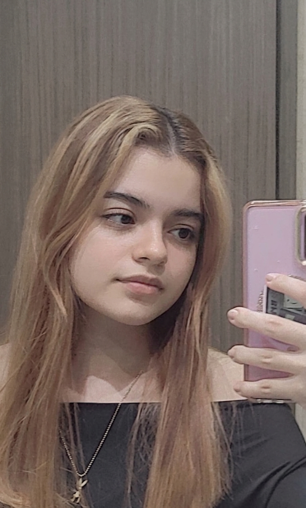
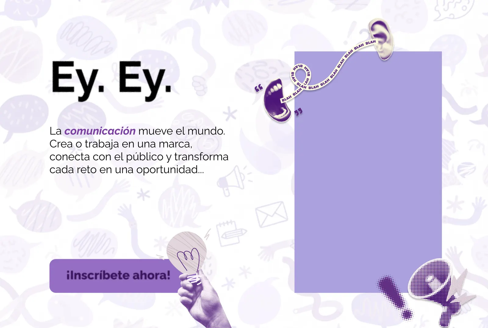
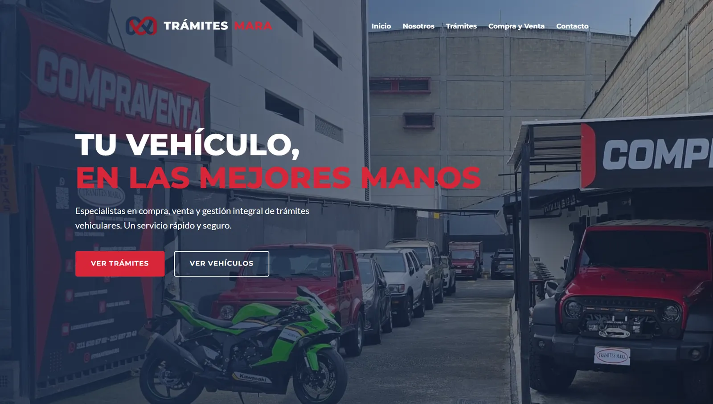

Universidad de Medellín · Comunicación y Entretenimiento Digital
Comunicadora · Diseñadora · Creadora
Ver mis proyectos
Sobre mí
Soy estudiante de Comunicación y Entretenimiento Digital en la Universidad de Medellín. Creo universos transmedia, diseño experiencias visuales y cuento historias que conectan con las audiencias.
Mi trabajo cruza mundos: del diseño a la animación 3D, de la investigación académica al desarrollo web. No solo creo — entiendo a quién le hablo y por qué.
Enfoque
Edición y posproducción de contenido promocional para pauta publicitaria, diseñado para captar la atención desde los primeros segundos.
Reels de edición: procesos, antes y después, y detrás de cámaras de proyectos reales.
Formato vertical: transiciones dinámicas, tendencias de edición y tips de posproducción.
Proyectos
Animación
Caminata de Emem (Duik Angela)
Ciclo de caminata de personaje 2D 'Emem' creado en Adobe Premiere Pro utilizando Duik Angela para el rigging.
Animación
Animación Tradicional de Emem
Animación 2D realizada cuadro a cuadro (frame por frame) del personaje 'Emem', explorando técnicas tradicionales en la suite de Adobe.
3D · Videojuego
Escenario 3D Interactivo
Modelado y texturizado de escenario 3D en Blender. Explora el modelo girándolo e interactuando con él directamente en el navegador.
3D · Modelado
Fantasma Pac-Man
Modelado 3D interactivo del icónico fantasma de Pac-Man, creado en Blender. Gira y explora el diseño directamente.
3D · Modelado
Caja de Madera 3D
Modelo 3D interactivo de una caja de madera, esculpida y texturizada en Blender. Puedes rotarla para explorarla.
3D · Modelado
Arma 3D
Modelo 3D interactivo de un arma, diseñado y texturizado en Blender. Explora los detalles girando el modelo.
3D · Entorno VR
Casa de Bruja VR
Escenario 3D interactivo de una casa medieval temática de brujería, modelado en Blender. Diseñado como menú de inicio inmersivo para un proyecto de realidad virtual.
3D · Animación
Animación 3D en Blender
Producción de animación 3D con modelado, iluminación y renderizado en Blender.

Diseño · UI/UX
Rebranding Web UdeM
Rediseño UI/UX de la página de Comunicación y Relaciones Corporativas de la Universidad de Medellín. Explora el sistema visual completo en el prototipo interactivo.
Diseño · Ilustración
Sprites Videojuego 2D
Creación de sprites para videojuego 2D en Adobe Illustrator.

UI/UX · Rebranding
Rebranding Web Vehículos
Rediseño completo de plataforma de compra, venta de vehículos y trámites. Nueva identidad visual y experiencia de usuario. Explora el sitio web en vivo.
3D · Videojuego
Chairs Party — Juego 3D Móvil
Videojuego 3D para móviles. Diseño de la interfaz de personalización de personajes y modelado 3D de elementos interactivos.
Investigación Académica
Acoso a Mujeres en Gaming
Investigación sobre la influencia del acoso hacia mujeres en videojuegos multiplayer. Presentada como oradora en el Congreso Stratcom UdeM.
Habilidades
Logros
2026
Seleccionada como oradora en el Congreso Stratcom de la Universidad de Medellín, presentando investigación sobre acoso a mujeres en videojuegos multiplayer.
2026
Segunda nominación consecutiva a los Premios Huella de la Universidad de Medellín, por el ecosistema transmedia creado para la producción de contenidos.
Dermalis2025
Nominada por un juego 3D para móviles con gran capacidad de expansión: más mapas, más skins y potencial para convertirse en un juego multijugador.
Chairs Party2023 – 2027
Estudiante activa del programa de Comunicación y Entretenimiento Digital con proyectos en diseño, animación, investigación y desarrollo web.
Contacto
lorenarojasarango2@gmail.com
¿Tienes un proyecto en mente? Me encantaría escucharte.